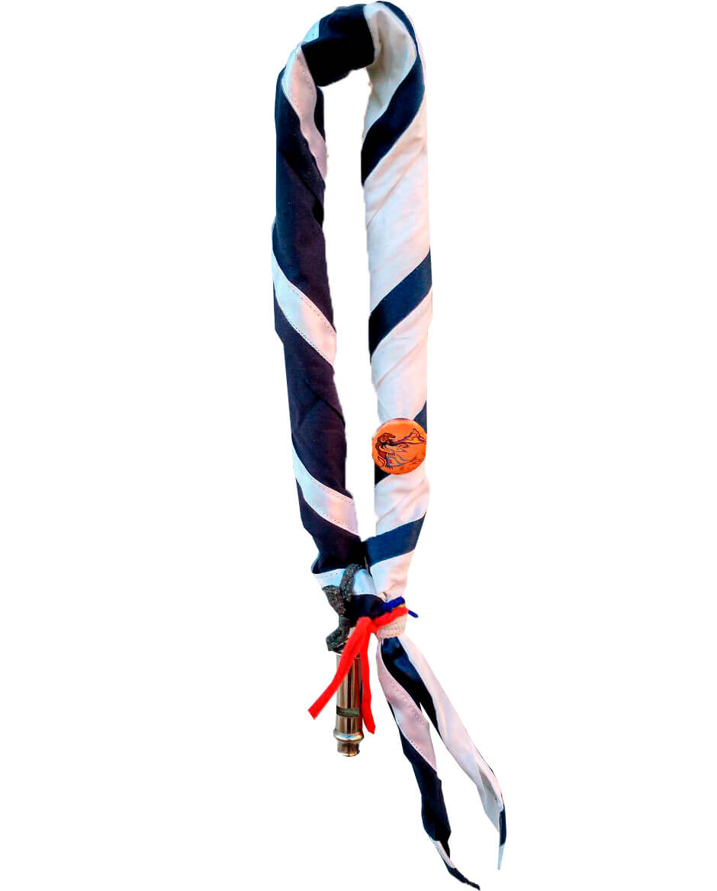

Retrato de Lord Robert Baden-Powell
David Jagger
¿QUÉ ES EL MOVIMIENTO SCOUT?
El Movimiento Scout nació en Inglaterra en 1907 gracias a Lord Robert Baden Powell, héroe de guerra británico que logró imaginar un método educativo para los jóvenes de su época. Rápidamente, esa experiencia se extendió a todo el mundo y fue evolucionando para adecuarse a los desafíos de los tiempos y las características de las distintas sociedades.
El Movimiento Scout existe en 162 países lo que suponen más de 40 millones de personas, de diferentes culturas, lenguas y religiones trabajando por construir un mundo mejor. Todo ello gracias a cerca de 7 millones de adultos voluntarios que apoyan las actividades que desarrollan los grupos scouts.
ORGANIZACIÓN DE LOS GRUPOS SCOUT
El Movimiento Scout está integrado por gente de todas las edades a partir de los 6 años. Cada Grupo Scout se suele dividir en cinco secciones, según las edades:
- Castores: de 6 a 8 años, conformando la Colonia Cometa.
- Manada: de 9 a 11 años, conformando la Manada Seonee.
- Tropa: de 12 a 14 años, conformando la Tropa Gilwell.
- Esculta: de 15 a 17 años, conformando la Esculta Rosa de los Vientos.
- Clan: de 18 a 20 años, conformando el Clan Aldebarán.
Además, cada sección está integrada por algunos scouters o educadores. Todos los educadores del Grupo forman el Kraal.
EL MÉTODO SCOUT
La acción educativa de nuestro movimiento se lleva a cabo con un método educativo que nos es propio:
el método Scout
Este método se basa en seis pilares fundamentales:
- Educación a través de la acción: todas nuestras actividades parten de los intereses de los Castores, Lobatos, Tropa, Escultas y Rovers. No son los scouters los que piensan todo. Se busca que cada sección piense que actividad realizar y se organice para llevarla adelante.
- Vida comunitaria: la idea es vivir la aventura scout en pequeños equipos. Así, aprenderemos a vivir en una sociedad donde cada integrante tiene una responsabilidad y donde todo se comparte. Es aprender a aceptar al otro, dejarse cuestionar por él y crecer en comunidad.
- Adhesión a una Ley y una Promesa: en nuestra Ley Scout, se expresa en una forma muy sencilla como queremos ser, hacia donde queremos llegar. Cada uno irá descubriendo y haciendo propios esos valores. La Promesa es la adhesión personal, libre y voluntaria de cada uno al estilo de vida que propone el escultismo.
- Progresión personal: es una invitación a que cada uno se haga responsable de su propio desarrollo. Todas las actividades que realizamos invitan a cada uno a proponerse metas y compromisos y a hacer todo lo posible por cumplir con ellos.
- Contacto con la naturaleza: la naturaleza es el mejor lugar para las actividades scouts. En pleno contacto con ella aprendemos a transformarla y a respetarla, nos ofrece un ámbito para encontrarnos con nosotros mismos y con la trascendencia.
- Acción educativa de los adultos: el método scout sólo es posible si existen adultos responsables de ponerlo en práctica. Los educares scouts son voluntarios responsables de generar los espacios para vivir los valores que propone el movimiento y ser testimonio del escultismo.
Queremos cambiar. Cambiarnos a nosotros mismos y poder cambiar nuestra sociedad, el mundo que nos rodea.
LA LEY SCOUT

- El/la Scout cifra su honor en ser digno/a de confianza.
- El/la Scout es leal.
- El/la Scout es útil y servicial.
- El/la Scout es amigo/a de todos y hermano/a de cualquier otro Scout.
- El/la Scout es cortés y educado/a.
- El/la Scout ama y protege la Naturaleza.
- El/la Scout es responsable y no hace nada a medias.
- El/la Scout es animoso/a ante peligros y dificultades.
- El/la Scout es trabajador/a, austero/a y respeta el bien ajeno.
- El/la Scout es limpio/a y sano/a; puro en sus pensamientos, palabras y acciones.